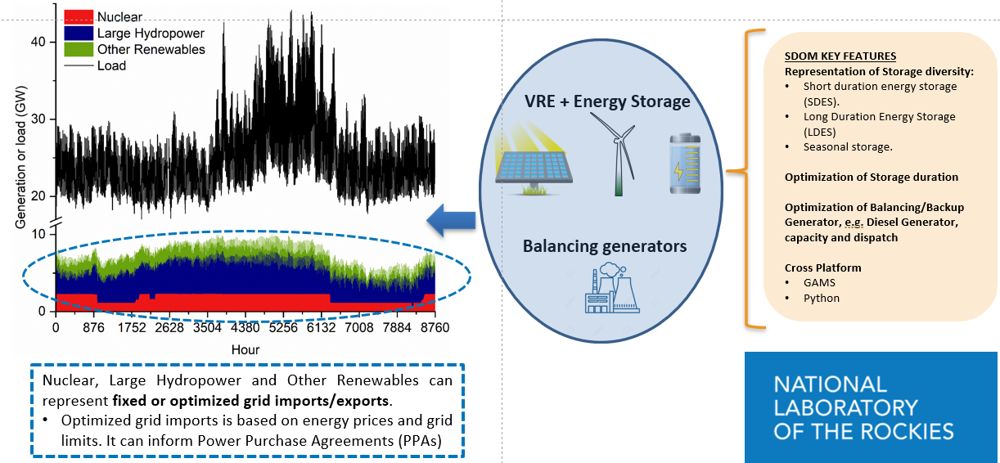

Introduction to SDOM
This page provides comprehensive introduction to the Storage Deployment Optimization Model.
Overview
SDOM (Storage Deployment Optimization Model) is an open-source, high-resolution grid capacity-expansion framework developed by the National Laboratory of the Rockies (NLR). It’s purpose-built to optimize the storage portfolio considering diverse storage technologies, leveraging hourly temporal resolution and granular spatial representation of Variable Renewable Energy (VRE) sources such as solar and wind.
How SDOM Works
At its core, SDOM models the gap between electricity demand and fixed generation by optimizing:
Variable Renewable Energy (VRE): Solar PV and wind capacity deployment
Energy Storage: Multiple storage technologies (Li-Ion, CAES, PHS, H2, etc)
Thermal Generation: Balancing thermal units capacity deployment
System Operation: Hourly dispatch over 8760 hours (1 year)
SDOM is particularly well-suited for figure out the required capacity to meet a carbon-free generation mix target by:
📆 Evaluating required optimal short, long-duration and seasonal storage portfolios
🌦 Analyzing complementarity and synergies among diverse VRE resources and load profile
📉 Assessing curtailment and operational strategies under various grid scenarios
An illustrative figure below shows the flow from inputs to optimization results, enabling exploration of storage needs under varying renewable integration levels.

Input Data
Load profiles (hourly demand)
Fixed generation profiles (nuclear, hydro, other renewables)
VRE capacity factors and cost data
Storage technology characteristics
Thermal generator parameters
System scalars (discount rate, carbon targets, etc.)
Outputs
Optimal technology portfolio capacities
Hourly dispatch profiles for each technology
Operational metrics (curtailment, storage cycling, costs)
System-level cost breakdowns (CAPEX, OPEX)
Simplified Mathematical Formulation
SDOM is formulated as a Mixed-Integer Linear Programming (MILP) problem that minimizes total system cost:
Subject to:
Energy balance constraints (\(supply = demand every hour\))
Capacity constraints (\(generation ≤ installed capacity\))
Storage state-of-charge constraints
Carbon-free or renewable energy targets
Technology-specific operational limits
Model Components
SDOM uses at its core Pyomo. The SDOM Pyomo model is organized into Blocks for each technology:
model.pv # Solar PV generation
model.wind # Wind generation
model.storage # Energy storage systems
model.thermal # Thermal balancing units
model.hydro # Hydropower
model.nuclear # Nuclear (fixed)
model.other_renewables # Other renewables such as Geothermal or Biomass
model.demand # Load profile
model.imports # Cross-border imports (optional)
model.exports # Cross-border exports (optional)
Key Features
Temporal Resolution
Full chronological 8760-hour simulation
No time-step aggregation or representative periods
Captures diurnal, weekly, and seasonal patterns
Storage Representation
Multiple storage technologies simultaneously
Separate power (MW) and energy (MWh) capacity optimization
Round-trip efficiency modeling
Coupled vs. decoupled charge/discharge power
Spatial Resolution
Fine-grained VRE resource representation
Multiple solar and wind plant locations
Geographic diversity captured in capacity factors
Flexibility
Multiple hydropower formulations (run-of-river, monthly budget, daily budget)
Optional import/export modeling
Configurable carbon-free generation targets
Computational Considerations
Copper Plate Assumption: No transmission constraints for computational efficiency
Solver Compatibility: Tested with CBC (open-source) and HiGHS solvers
Scalability: 8760-hour problem with typical scenarios solves in minutes to hours
Close to 100% free carbon target scenarios tend to be the more complex problems to solve.
Also, scenarios where multiple storage technologies are being modelled and SDOM is optimizing both power and energy capacity tend to be harder to solve.